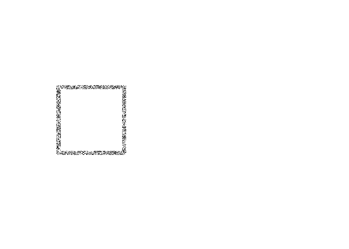
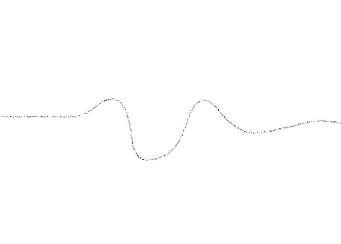
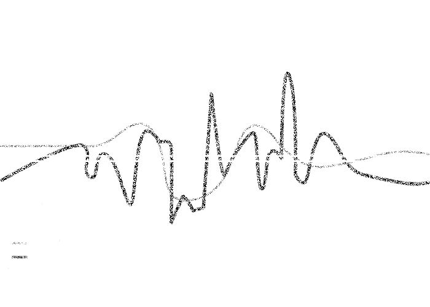
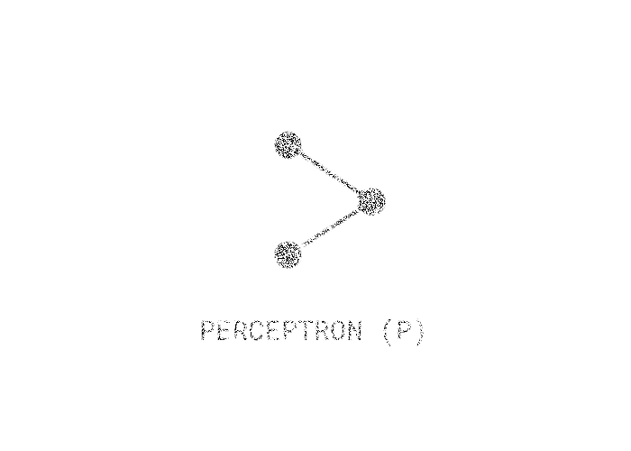

III. Model learning
"Machine learning is a term that, as much as ‘AI', anthropomorphizes a piece of technology: machine learning learns nothing in the proper sense of the word, as a human does."
Bruce force approximation

Neural networks are said to be among the most efficient algorithms because these differential methods can approximate the shape of any function given enough layers of neurons and abundant computing resources.
Interpolation extrapolation

The statistical model of machine learning algorithms is also an approximation in the sense that it guesses the missing parts of the data graph: either through interpolation, which is the prediction of an output y within the known interval of the input x in the training dataset, or through extrapolation, which is the prediction of output y beyond the limits of x, often with high risks of inaccuracy.
Curve fitting

‘curve fitting’ imposes a statistical culture and replaces the traditional episteme of causation (and political accountability) with one of correlations blindly driven by the automation of decision making.
Model fitting

The challenge of guarding the accuracy of machine learning lays in calibrating the equilibrium between data underfitting and overfitting, which is difficult to do because of different machine biases.
Arquitecture algorithm

The algorithm starts as a blank slate and, during the process called training, or ‘learning from data', adjusts its parameters until it reaches a good representation of the input data.
Ghost work
-
Chosing parameters
-
Defining model
-
Algorithmic becaming bias +
Algorithmic bias is the further amplification of historical bias and dataset bias by machine learning algorithms